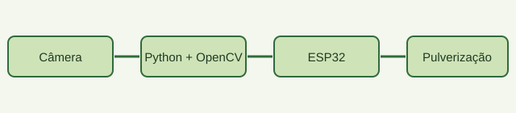

O projeto LEAF
Nesta página, um resumo do que o projeto estuda. Para ir direto ao ponto, veja como o sistema funciona.
Objetivos
- Acessibilidade: usar hardware barato e software aberto.
- Automação: estudar a pulverização controlada pelo computador.
- Visão computacional: reconhecer plantas e sinais visuais de pragas em imagens.
- Sustentabilidade: pesquisar ingredientes de origem natural para proteger as culturas.
- Educação: juntar programação, eletrônica e ciências ambientais.
Como funciona

- Uma câmera fotografa as plantas.
- Um programa em Python analisa as imagens com OpenCV, olhando principalmente as cores.
- O programa decide o que fazer e envia o comando por cabo USB.
- Um microcontrolador ESP32 move os motores e liga as bombas de pulverização.
A classificação usa regras simples, não um modelo de inteligência artificial treinado. Treinar e testar um modelo é uma das próximas etapas.
Proteção ecológica
O grupo estuda ingredientes como neem, própolis, alho, cebola, pimenta-malagueta, óleo de cravo e sabão potássico. São objetos de estudo, não receitas prontas: ser natural não garante que algo seja seguro ou eficaz.